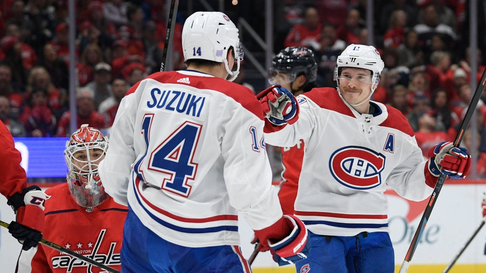

Je m'appelle Fabrice Samedy et je suis originaire de Montréal, amis j'étudie à Ottawa au niveau universitaire.
Je suis un étudiant de troisième années dans le programme de journalisme numérique à l'Université d'Ottawa.
Mes centre d"intérêts sont le sport,la musique et les jeux vidéos.J'aime beaucoup les pâtes.

Depuis ma plus jeune enfance, j'ai toujours été un partisan de sport et plus particulièrement de hockey. L'équipe qui a marqué mon enfance est sans aucun doute les Canadiens de Montréal
Dans mes temps libres, j'aime bien surfer sur Internet. Mes sites préféré sont les suivants: